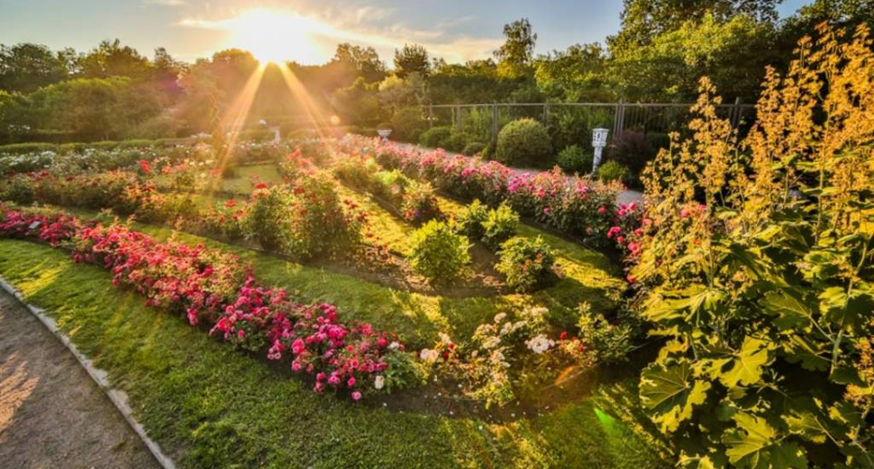

Парк «Сокольники»
Парк «Сокольники» в Москве — один из самых больших и посещаемых парков Европы, особенно популярный у семейной аудитории.Летом в парке работают
- пляжи и бассейны
- парк аттракционов
- кинотеатр на открытом воздухе
- спортивные площадки
Любители тихого отдыха по достоинству оценят природу парка:
Розарии и сады с сотнями видов цветов и растений, многочисленные пруды и их обитателей, а также уютную лесопарковую зону.
В зимнее время здесь можно покататься на коньках, тюбингах и лыжах.
На территории имеются кафе, в которых можно перекусить или согреться чаем.